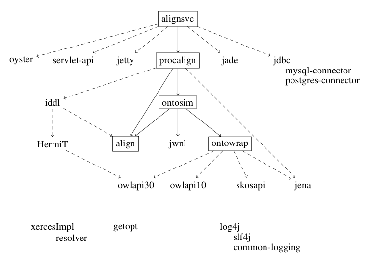

Alignment API: Libraries shipped with the package (release 4.5)
The Alignment API uses a number of external libraries. These libraries
are shipped (in the lib directory) with the Alignment API. Each
subdirectory of the lib directory
contains Project Object
Models (POM) which provide information about the version,
license and dependencies for these libraries.
We provide here the list of these libraries together with the
reason why they may be necessary within the API and some other
information.
Some of these libraries are necessary for recompiling the Alignment
API. Some of them are only needed at runtime when invoking the
feature that uses them. You may use this information for restricting
the libraries to only the one you need.
Here is a picture of the various dependencies involved:

This is a simplified view: click here
for the full graph generated by Tattletale.
Required for the API implementation (procalign)
- Gnu
getopt 1.0.13: getopt.jar
[LGPL]
- Gnu library for parsing command line arguments. Required
everywhere (included by OWL-API).
- SLF4J 1.7.2:
slf4j-api.jar log4j-over-slf4j.jar jcl-over-slf4j.jar [MIT license]
- At last some clean-up in the Java logging realm.
Required for using EDOAL
- Jena 2.6.2:
jena.jar icu4j.jar iri.jar arq.jar [BSD*]
- Provides the RDF parser.
- Xerces 2.9.1: xercesImpl.jar resolver.jar xml-apis.jar [Apache]
- Required by Jena for parsing international characters.
Required for some bundled matching methods
- OntoSim 2.3adv: ontosim.jar [LGPL]
- The whole ontosim system requires more libraries, including JWNL. But in our simplest behaviour, these libraries are not needed.
- Lucene 3.0.2: lucene-core.jar [Apache]
- This small part of lucene is used for WordNet matching classes.
Required for the WordNet addition (JWNLAlignment)
In addition to OntoSim, JWNLAlignment requires JWNL.
- JWordNet (JWNL)
1.4rc2: jwnl.jar [BSD]
- This also requires WordNet to be installed in the computer.
Required for reasoning with alignments
- DRAOn (or IDDL) 1.5: iddl.jar [LGPL]
- In turns it requires HermiT.
- HermiT 1.3.6:
[LGPL]
- Provides OWL Reasoning. It requires the OWL API.
Required for parsing ontologies (ontowrap)
Ontowrap requires one of these libraries to be functional. It will
only compile if all of them are available. However, it is possible to
delete the subdirectories src/fr/inrialpes/exmo/ontowrap/xxxx
and this will compile again.
- OWL API 3.0:
owlapi-bin.jar [LGPL]
- Provides parsing and API to OWL entities. Used by
OWLAPIAlignments. api.jar is required for compiling, the others are
necessary for executing parts of the Alignment API which need the
OWL API.
- OWL API 1.4.3:
rdfapi.jar rdfparser.jar api.jar impl.jar io.jar [LGPL]
- Provides parsing and API to OWL entities. Used by
OWLAPIAlignments. api.jar is required for compiling, the others are
necessary for executing parts of the Alignment API which need the
OWL API.
- Jena
- is also an option.
Required for the Alignment server (alignsvc)
- MySQL
JDBC Connectors 5.1.12: mysql-connector-java-5.0.3-bin.jar
[GPL]
or Postgres JDBC
connectors 8.4.701 [BSD]
- This also requires MySQL to be installed. Required for alignsvc.
- Jetty 6.1.2rc5: jetty.jar
jetty-util.jar [Apache]
- Required for HTML and web service part.
- Servlet API 2.5:
servlet-api.jar
[Sun Binary Code License]
- Required and shipped with Jetty. This is part of Java 2 Enterprise Edition
Required for the Agent/JADE plug-in
- Java Agent Development
Environment (JADE) 3.7: jade.jar http.jar iiop.jar [LGPL]
- Required by alignsvc (Agent version).
Required for the Web service plug-in
Required for the P2P/JXTA plug-in
-
http://alignapi.gforge.inria.fr/lib.html
$Id: lib.html 1846 2013-03-25 15:28:06Z euzenat $